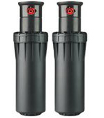

Продажа
комплектующих
Мы являемся официальными представителями производителя систем полива Hunter, а также насосного оборудования EPSA. Это позволят нам иметь большой ассортимент комплектующих для автоматического полива всегда в наличии по выгодным ценам.
Проектирования и монтаж
систем полива
Наша компания обеспечивает полный перечень услуг по проектированию и монтажу атоматического полива. Мы имеем большой опыт в осущетвлении как малых так и больших проектов
Гарантия
качества
Наша компания более 10 лет присутвует на рынке систем полива. Большой опыт работы и высоко квалифицированный персоонал обеспечивают гарантию качества и надежнасти наших систем полива.
Веерные разбрызгиватели
Статические дождеватели не вращаються всем корпусом, а сектор полива регулируется только размером сопла, то есть поток воды ращепляется через узкую щель. Такой полив более качественее, равномеренее и эффективнее на небольших площадях. Промывочное сопло. Высокопрочная пружина. Регулируемое давление.
Роторные разбрызгиватели
Данный тип дождевателей при поливе вращаеться всем корпусом, тем самым он заставляет распыляться весь поток воды по заданному радиусу, как бы вращая и его. Этот вариант эффективен при автоматическом поливе больших площадей. Автоматический возврат к данному сектору полива Прочный поворотный механизм. Регулируемое полнокруговое вращение одной модели.
Клапаны

Клапаны марки "Hunter" отличаються высокой надежностою. Надежность гарантирована благодаря инновационным стандартным функциям - полноповоротному циклу - для клапанов любых размеров и назначения.
MP Rotator

Это многоструйный ротор, имеющий размер форсунки. Он подходит к любому стандартному статическому распылителю, превращая его в экономичный ороситель с низкой расходной характеристикой и высокой равномерностью распыления. Простота установки. Грязестойкост. Надежность эксплуатации.
Датчики погоды
Датчик дождя Rain Clik. Давайте просто скажем, что у этого прибора быстрые рефлексы. Благодаря технологии Quick Response™, только Hunter Rain-Clik™ немедленно реагирует на воду.
Полив микрокапельный
Микрокапельный полив - это секретное оружие полива. Клумбы, разделительные полосы автострады и почва только выигрывают от точечной микроиригации, благодаря которой вода попадает только туда, куда действительно необходимо. Обеспечение высококачесвенного полива Предотвращение излишнего расхода воды. Быстрое и простое подключение.
Фитинги Irritec (Италия)
Компрессионные фитинг Irritec (Италия) применяются для монтажа полиэтиленовых трубопроводов, подсоединения оросителей и прочего оборудования автоматических систем полива.
Насосы Espa

Насосы и насосные станции Espa. Насосы Espa Aspri идеальны применительно к автоматическим системам полива, гибкие технические параметры позволяют использовать данные насосы в широком диапазоне.